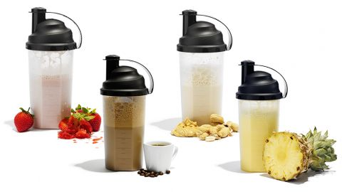

<!DOCTYPE html>
<meta http-equiv="content-type" content="text/html;charset=UTF-8" />
<head>
    <title>Impins la piet cu bara | HealthyZ</title>
    <meta property="og:site_name" content="Strength Coach Glasgow" />
    <meta http-equiv='cache-control' content='no-cache' />
    <meta http-equiv="Content-Type" content="text/html; charset=utf-8" />
    <meta name="viewport" content="width=device-width, initial-scale=1.0" />
    <link id="wsite-base-style" rel="stylesheet" type="text/css" href="../../cdn2.editmysite.com/css/sites9be7.css?buildTime=1561486651" />
    <link rel="stylesheet" type="text/css" href="../files/main_stylef74e.css?1561485939" title="wsite-theme-css" />
    <link href='http://fonts.googleapis.com/css?family=Montserrat:400,700&amp;subset=latin,latin-ext' rel='stylesheet' type='text/css' />
</head>
<body class="header-page  wsite-page-blog wsite-blog-post  full-width-body-off header-overlay-on alt-nav-on  wsite-theme-light">
    <div class="wrapper">

        <div class="banner-wrap">
            <div class="wsite-elements wsite-not-footer wsite-header-elements">
                <div class="wsite-section-wrap">
                    <div class="wsite-section wsite-header-section wsite-section-bg-image wsite-section-effect-parallax" style="height: auto;background-image: url(_/uploads/1/2/3/3/123320581/background-images/1565318044.html);background-repeat: no-repeat ;background-position: 50% 50% ;background-size: 100% ;background-color: transparent ;background-size: cover;background-attachment: fixed;">
                        <div class="wsite-section-content">
                            <div class="container">
                                <div class="banner">
                                    <div class="wsite-section-elements">
                                        <div class="wsite-spacer" style="height:50px;"></div>

                                        <h2 class="wsite-content-title">Antrenamente | Nutritie</h2>

                                        <div class="wsite-spacer" style="height:50px;"></div>
                                    </div>
                                </div>
                            </div>

                        </div>
                        <div class=""></div>
                    </div>
                </div>

            </div>

        </div>

        <div class="main-wrap">
            <div class="wsite-section-content">
                <div class="container">
                    <div class="wsite-elements wsite-not-footer">
                        <table id="blogTable" class="wsite-not-footer" style="border: 0; width: 100%; table-layout: fixed">
                            <tr>
                                <td valign="top">
                                    <div id="815468006538632597-blog" class="blog-body" style="float: left;">
                                        <div id="wsite-content">
                                            <div id="blog-post-205195184828542372" class="blog-post">

                                                <div class="blog-header">
                                                    <h2 class="blog-title">
					<a class="blog-title-link blog-lin">Impins la piept cu bara</a>

			</h2>
                                                    <p class="blog-date">
                                                        <span class="date-text">
		2/25/2019
	</span>

                                                    </p>
                                                    <p class="blog-comments">

                                                    </p>
                                                </div>

                                                <div class="blog-separator">&nbsp;</div>

                                                <div class="blog-content">
                                                    <div>
                                                        <div class="wsite-image wsite-image-border-none " style="padding-top:10px;padding-bottom:10px;margin-left:0px;margin-right:0px;text-align:center">
                                                            <a>  </a>
                                                            <div style="display:block;font-size:90%"></div>
                                                        </div>
                                                    </div>
                                                    <div class="paragraph">16 RETETE DE SHAKE-URI PROTEICE !<br><br>

Fie ca ai o dieta de acumulare de masa musculara, una de definire sau doar vrei sa te mentii, probabil ca dai pe gat cateva shake-uri de proteine pe zi. Asta pentru ca proteinele sunt un macronutrient esential cand vine vorba de consolidarea si mentinerea masei musculare. 
In ciuda beneficiilor pe care ni le aduc corpului, unele din aceste shakeuri proteice pot fii greu de inghitit...la propriu. Daca vrei arome noi, si shake-uri proteice delicioase, mai jos am o selectie de retete, usor de preparat si extrem de gustoase. 
Pentru fiecare reteta, doar pune ingredientele in blender, si amesteca pana obtii consistenta dorita.<br><br>

1.Shake proteic de vanilie si cafea<br>

330 ml lapte degresat<br>
2 cupe pudra proteica de vanilie<br>
100 g inghetata de cafea fara grasimi<br><br>

2.Shake proteic cu soia si migdale<br>

o cupa de pudra proteica<br>
225 ml lapte de soia<br>
o lingura migdale crude<br>
o lingurita de miere<br>
3 picaturi extract de vanilie<br>
o mana de cuburi de gheata<br>
o lingura iaurt grecesc<br><br>

3.Shake proteic revigorant<br>

sucul de la 3 portocale medii <br>
o cupa pudra de proteine<br>
indulcitor (optional)<br><br>

4.Shake proteic cu ovaz<br>

200 g fulgi de ovaz<br>
2 cupe proteina de vanilie<br>
1/2 lingurita scortisoara<br>
o lingurita miere<br>
o lingura migdale tocate<br>
330 ml lapte degresat<br><br>

5.Shake proteic cu migdale<br>

2 cupe proteina din zer cu gust de vanilie<br>
330 ml lapte degresat<br>
110 g fulgi de ovaz<br>
100 g stafide<br>
12 migdale<br>
o lingura unt de arahide<br><br>

6.Shake proteic de banane<br>

o banana<br>
115 ml lapte degresat<br>
10 migdale<br>
o cupa pudra proteica<br>
o mana de cuburi de gheata<br><br>

7.Shake proteic de fructe de padure<br>

2 cupe proteina vanilie<br>
8 zmeure<br>
4 capsune<br>
15 afine<br>
400 ml lapte degresat<br>
o mana cuburi de gheata<br><br>

8.Shake proteic de capsune<br>

4 cupe proteina din zer cu vanilie<br>
220 ml apa<br>
230 g iaurt grecesc<br>
3 capsune mari, inghetate<br>
o lingurita creatina<br>
o lingurita seminte de in<br><br>

9.Shake proteic de capsune cu nuci<br>

2 cupe proteina vanilie<br>
230 g iaurt grecesc<br>
4 capsune<br>
6 nuci tocate<br><br>

10.Shake proteic cu capsune si gust de cheesecake<br>

280 ml apa<br>
8 capsune inghetate<br>
4 linguri de smantana acra cu 16% grasime<br>
o cupa de pudra proteica de vanilie<br>
cateva picaturi de stevia<br><br>

11.Shake proteic de afine<br>

o cupa de proteina<br>
280 ml apa<br>
120 g afine proaspete sau congelate<br>
2 lingurite seminte de in<br>
indulcitor (optional)<br><br>

12.Shake proteic cremos, cu fructe de padure<br>

o cupa de pudra proteica<br>
o mana cuburi de gheata<br>
o conserva mica de suc de ananas<br>
o mana amestec fructe de padure<br><br>

13.Shake proteic cu unt de arahide<br>

220 ml lapte degresat<br>
un albus de ou<br>
o lingura unt de arahide<br>
doua cupe si jumatate pudra proteica de ciocolata<br>
o lingurita creatina<br>
30 ml creamer de cafea cu gust de alune de padure (de preferat, fara zahar)<br><br>

14.Shake proteic cu unt de arahide si banane<br>

doua cupe proteina<br>
100 g fulgi de migdale<br>
o lingura unt de arahide<br>
230 ml lapte degresat<br>
o jumatate de banana<br>
o lingura miere<br><br>

15.Shake proteic cu unt de arahide si ciocolata<br>

doua cupe proteina din zer cu gust de ciocolata<br>
o lingura unt de arahide<br>
420 ml lapte degresat<br>
o mana cuburi de gheata<br><br>

16.Shake proteic pentru iubitorii de ciocolata<br>

350 ml apa<br>
o lingurita pudra de cacao<br>
2 linguri smantana acra<br>
doua cupe proteina de vanilie<br>
doua lingurite seminte de in<br>
indulcitor (optional)<br><br>
                                                    Când se iau proteinele?<br>
Cum spuneam, cei mai mulți oameni care fac cunoștință cu „fenomenul sălii” cred în mitul suplimentului proteic minune, care face mușchii să crească peste noapte. Iar odată cu acest mit a apărut și cel al administrării shakeurilor proteice. După părerea unora, proteinele se consumă la trezire, pe stomacul gol. După a altora, cel mai bine e să îți bei shakeul înainte de antrenament. Ba chiar am văzut persoane cărând shakeul proteic inclusiv în sală.<br><br>

În realitate, un răspuns concret nu există, asta pentru că administrarea proteinelor și a suplimentelor în general nu trebuie făcută după ureche, ci după nevoile specifice ale fiecărui organism în parte. Astfel, ar trebui să ne stabilim întâi nevoile și prioritățile.<br><br>

– Slăbirea<br><br>

În procesul de slăbire, proteinele reprezintă un macronutrient deosebit de important. O dietă hiperproteica sporește arderile metabolice și reduce apetitul. De asemenea, protejează musculatura, dat fiind că în momentul în care corpul detectează un deficit caloric începe să consume din propriile rezerve. Una dintre rezervele consumate de corp pentru a-și menține nivelul de energie în ciuda deficitului caloric este masa musculară.<br><br>

– Construirea de masă musculară<br><br>

Proteina este egal importantă în procesul de acumulare de masă musculară. Pentru a construi mușchi și forță, organismul are nevoie de combustibil.<br><br>

Cel mai cunoscut mit spune că pentru a ajuta creșterea musculară, proteinele trebuie consumate în maximum o oră de la încheierea antrenamentului, într-o așa numită „fereastră anabolica”. Totuși, numeroase studii au demonostrat că această fereastră este mai mare decât ar crede unii și că mai important decât momentul consumării proteinelor este pur și simplu consumul. Asta pentru că organismul nu intră nicidecum într-un timp atât de scurt într-un proces de ardere a propriei mase musculare. Apoi, corpul își păstrează întotdeauna rezerve din care să se refacă și să se reenergizeze.<br><br>

Astfel, cât timp el beneficiază de un aport proteic adecvat, va ști la ce resurse să apeleze și unde să le trimită.<br><br>

– Menținerea masei musculare<br><br>

Studiile arată că după vârsta de 30 de ani, oamenii încep să piardă în jur de 3% din masa musculară cu fiecare an care trece.<br><br>

Astfel, specialiștii recomandă consumul de proteine la fiecare masă, la un nivel de 25-30 de grame proteine per porție.<br><br>

– Performanța sportivă și refacerea<br><br>

Chiar și atleții profesioniști se găsesc uneori în situația de a se întreba când ar trebui să mănânce proteine sau să ia suplimente.<br><br>

Pentru sportivii de anduranță, studiile au arătat că proteinele ar trebui combinate cu surse de carbohidrați. Astfel, corpul beneficiază de un aport energetic, dar și de nutrienții necesari pentru hrănirea mușchilor și refacerea lor.<br><br>

Pentru cei mai mulți oameni, momentul consumului unei mese bogate în proteine sau a unui supliment este mai puțin important. Pe de altă parte, sportivii care practică discipline ce testează rezistentă beneficiază mai mult de pe urma consumului de proteine și carbohidrați în jurul antrenamentului, pe de-o parte pentru menținerea energiei, iar pe de alta pentru refacerea mai rapidă.<br><br>

Prea multe proteine mă pot afecta?<br>
Studiile arată că un consum ridicat de proteine nu are efecte secundare. De asemenea, ele spun că un dozaj de 1.4-2 grame de proteine per kilogram corp contribuie la protejarea și dezvoltarea masei musculare, atuni când există premise pentru așa ceva (n.r antrenamente specifice).<br><br></div>
                                                    <div class="paragraph"><u><em>Sfaturi recomandate pentru:<br /></em></u>Incepatori: &#10004;&#65039;
                                                        <br />Avansati: &#10004;&#65039;
                                                        <br />&nbsp;
                                                        <br /><u><em>Sfaturi!<br /></em></u>
                                                        <ul>
                                                            <li>In primul rand trebuie sa realizezi o incalzire generala de 10-15 min, iar mai apoi sa reazlizezi o incalzire specifica, pentru fiecare grupa folosita, intre 10-15 min.</li>
                                                            <li>Incepe cu greutati mici la inceput, ca mai apoi sa cresti treptat greutatea.</li>
                                                            <li>Mereu fii concentrat si focusat pe ceea ce ai de facut la sala, lasand la intrare toate probleme si frustrarile, deoarece acestea iti vor diminua antrenamentul</li>
                                                            <li>Mereu cand nu esti sigur de un anumit exercitiu, intreaba un membru din cardul salii, sunt sigur ca te va ajuta.</li>
                                                            <li>Nu te lasa intimidat de ceilalti.</li>
                                                        </ul>
                                                    </div>
                                                    <div class="wsite-youtube" style="margin-bottom:10px;margin-top:10px;">
                                                        <div class="wsite-youtube-wrapper wsite-youtube-size-auto wsite-youtube-align-center">
                                                            <div class="wsite-youtube-container">
                                                                <iframe width="560" height="315" src="https://www.youtube.com/embed/NWcIKbWK0Ko" frameborder="0" allow="accelerometer; autoplay; encrypted-media; gyroscope; picture-in-picture" allowfullscreen></iframe>
                                                                <br>
                                                                <br>
                                                                <iframe width="560" height="315" src="https://www.youtube.com/embed/VBkH5vMd8Yc" frameborder="0" allow="accelerometer; autoplay; encrypted-media; gyroscope; picture-in-picture" allowfullscreen></iframe>
                                                                <br>
                                                                <br>
                                                                <iframe width="560" height="315" src="https://www.youtube.com/embed/1ekbi9z-5-4" frameborder="0" allow="accelerometer; autoplay; encrypted-media; gyroscope; picture-in-picture" allowfullscreen></iframe><br><br>
                                                                <iframe width="560" height="315" src="https://www.youtube.com/embed/YuDhbLQtt2k" frameborder="0" allow="accelerometer; autoplay; encrypted-media; gyroscope; picture-in-picture" allowfullscreen></iframe>>br>
                                                                <br>
                                                            </div>
                                                        </div>
                                                    </div>
                                                   <div class="paragraph">Mai sus am atasat cateva video-uri explicative.
                                                        <br>
                                                    </div>
                                                    <h2 class="wsite-content-title" style="text-align:center;">Doresti mai multe informatii sau ajutor?</h2>
                                                    <div>
                                                        <div class="wsite-multicol">
                                                            <div class="wsite-multicol-table-wrap" style="margin:0 -15px;">
                                                                <table class="wsite-multicol-table">
                                                                    <tbody class="wsite-multicol-tbody">
                                                                        <tr class="wsite-multicol-tr">
                                                                            <td class="wsite-multicol-col" style="width:42.134831460674%; padding:0 15px;">
                                                                                <div>
                                                                                    <div class="wsite-image wsite-image-border-none " style="padding-top:10px;padding-bottom:10px;margin-left:0px;margin-right:0px;text-align:center"> 
                                                                                        <div style="display:block;font-size:90%"></div>
                                                                                    </div>
                                                                                </div>
                                                                            </td>
                                                                            <td class="wsite-multicol-col" style="width:57.865168539326%; padding:0 15px;">
                                                                                <div class="paragraph"><strong style="color:rgb(42, 42, 42)">Cu ce te putem ajuta?</strong>
                                                                                    <ol style="color:rgb(42, 42, 42)">
                                                                                        <li>Poti beneficia de un antrenor personal</li>
                                                                                        <li>Program nutritional customizat pentru tine</li>
                                                                                        <li>Sfaturi si participari la diferite dezbateri din cadrul sportului</li>
                                                                                        <li>Poti devenii un afiliat / partener</li>
                                                                                    </ol>
                                                                                </div>
                                                                            </td>
                                                                        </tr>
                                                                    </tbody>
                                                                </table>
                                                            </div>
                                                        </div>
                                                    </div>
                                                    <div class="paragraph"><span style="color:rgb(42, 42, 42)">Daca esti client nou, poti beneficia de diferite reduceri, la programe de antrenament si nutritionale, sau aducand un nou membru, poti castiga diferite produse promotionale.</span><span style="color:rgb(42, 42, 42)">&#8203;&#8203;</span></div>
                                                    <div style="text-align:center;">
                                                        <div style="height: 10px; overflow: hidden;"></div>
                                                        <div style="height: 10px; overflow: hidden;"></div>
                                                    </div>

                                                </div>

                                                <div class="blog-comments-bottom">

                                                </div>

                                                <div class="blog-post-separator"></div>
                                            </div>

                                            <a name="comments" id="comments"></a>
                                            <div id="commentArea">
                                                <div class="blog-comment-area">

                                                    <div id="commentText">
                                                        <!-- lastComment -->
                                                        <div id="lastComment"> </div>
                                                    </div>
                                                    <br />
                                                    <div class="blog-notice-comments-closed">Comments are closed.</div>

                                                </div>

                                            </div>

                                        </div>
                                    </div>

                                </td>

                            </tr>
                        </table>

                    </div>
                </div>
            </div>
        </div>

        <div class="footer-wrap">
            <div class="footer">
                <div class='wsite-elements wsite-footer'>
                    <div>
                        <div class="wsite-multicol">
                            <div class="wsite-multicol-table-wrap" style="margin:0 -25px;">
                                <table class="wsite-multicol-table">
                                    <tbody class="wsite-multicol-tbody">
                                        <tr class="wsite-multicol-tr">
                                            <td class="wsite-multicol-col" style="width:50.21765051138%; padding:0 25px;">

                                                <div>
                                                    <div class="wsite-multicol">
                                                        <div class="wsite-multicol-table-wrap" style="margin:0 -15px;">

                                                        </div>

                                                        <div>
                                                            <div style="height: 20px; overflow: hidden; width: 100%;"></div>
                                                            <hr class="styled-hr" style="width:100%;"></hr>
                                                            <div style="height: 20px; overflow: hidden; width: 100%;"></div>
                                                        </div>

                                                        <div>
                                                            <div class="wsite-multicol">
                                                                <div class="wsite-multicol-table-wrap" style="margin:0 -15px;">
                                                                    <table class="wsite-multicol-table">
                                                                        <tbody class="wsite-multicol-tbody">
                                                                            <tr class="wsite-multicol-tr">
                                                                                <td class="wsite-multicol-col" style="width:50%; padding:0 15px;">

                                                                                    <div class="paragraph" style="text-align:left;"><font size="1">&copy; COPYRIGHT 2019. ALL RIGHTS RESERVED.</font></div>

                                                                                </td>
                                                                                <td class="wsite-multicol-col" style="width:50%; padding:0 15px;">

                                                                                    <div>
                                                                                        <div id="912742856326153445" align="right" style="width: 100%; overflow-y: hidden;" class="wcustomhtml">Website Design by <a href="#" rel="nofollow">FreakZ</a></div>
                                                                                    </div>
                                                                                </td>
                                                                            </tr>
                                                                        </tbody>
                                                                    </table>
                                                                </div>
                                                            </div>
                                                        </div>
                                                    </div>
                                                </div>
                            </div>
                        </div>
</body>

</html>